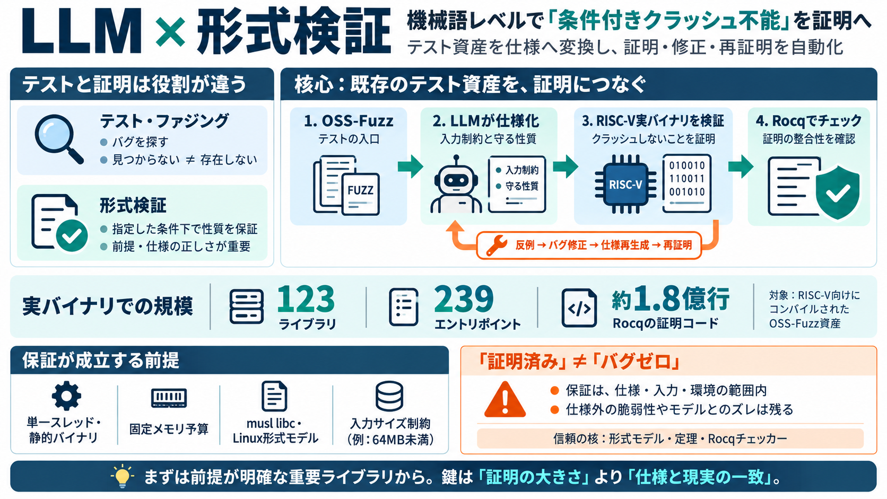

Anthropic shows LLMs can formally verify assembly code at scale across 123 open-source libraries | LavX News
Share this article Anthropic and Theorem used Claude to prove memory-safety properties in RISC-V binaries from OSS-Fuzz…

AIが“機械語”を検証へ
LLM（Claude）がRISC-Vの実バイナリに対して、条件付きで「クラッシュしない」ことを大規模に証明しはじめています。
形式手法（formal verification / 形式検証）を、テスト資産に接続して“再利用可能なワークフロー”に近づける試みです。
テストは“ゼロ”を保証しない
ファジングや回帰テストはバグを見つける確率を下げますが、「見つからない＝存在しない」とは言い切れません。
仕様は“地図”
証明は強力ですが、仕様やCPU/OSの形式モデル（実行意味論）が現実をどれだけ写すかで価値が決まります。
OSS-Fuzz→証明仕様
研究はOSS-Fuzzの多数の入口（クラッシュ検出のエントリポイント）を、「入力が一定未満ならクラッシュしない」という形式仕様へ変換しました。
証明し、直し、再証明
証明で反例（クラッシュ等）が出ると、Claudeがバグを修正し、仕様を再生成して再度証明を成立させるサイクルを回しました。
| ステップ | 目的 | 成果 |
|---|---|---|
| i | 仕様を作る | 入力制約つきの性質へ |
| ii | 証明を試す | クラッシュしないこと（条件付き） |
| iii | 失敗を修正 | 修正後に再度成立 |
数が“実務級”
RISC-V向けにコンパイルされた実バイナリで、123ライブラリの239エントリポイントを対象に、条件に基づくクラッシュ不能を示しました。
成立条件は明確
保証は万能ではなく、単一スレッド静的バイナリ、固定メモリ予算、musl libc、Linuxの形式モデルなどの前提に依存します。
“証明済み”≠“バグゼロ”
証明器が検証したのは「仕様と整合した範囲での性質」です。仕様が現実の脅威や運用を包含していないと、期待ほど安全になりません。
“探索”から“全保証”へ
この流れの狙いは、ファジングが見つけるかもしれないクラッシュを、形式的に「存在しない（条件内）」へ寄せることです。
信頼境界を小さく
巨大な証明コードでも、最終的に信頼すべき対象をRISC-V/ Linuxの形式モデル、証明された定理、Rocqのチェッカー等に絞ってチェック可能にする、と主張されています。
導入の勘所
まずは、メモリ安全やクラッシュ不能のように仕様化しやすく、運用前提が明確な範囲から段階導入するのが現実的です。
ロードマップは“条件付き”
LLMがテスト資産（OSS-Fuzz）から形式仕様へ変換し、証明・修正・再証明のループで大規模にクラッシュ不能を示しはじめています。
Share this article Anthropic and Theorem used Claude to prove memory-safety properties in RISC-V binaries from OSS-Fuzz…
Proof Generation Beyond Rust. LLM-based proof generation has also been studied for theorem provers such as Rocq (Team, 2…
Recent Posts View All SiFive Perspective: RISC-V SPMP Specification Ratification is a Leap Forward for Embedded Securi…
In retrospect, we would recommend writing the trusted base by hand and using the LLM only for proofs. ### Claude did no…
For a design with just 100 input variables (or bits), we would need: 2100 ≈ 1.27 × 1030 runs – which would take over 40 …